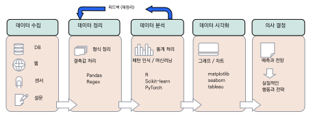
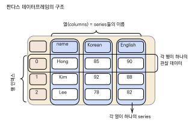
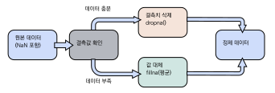
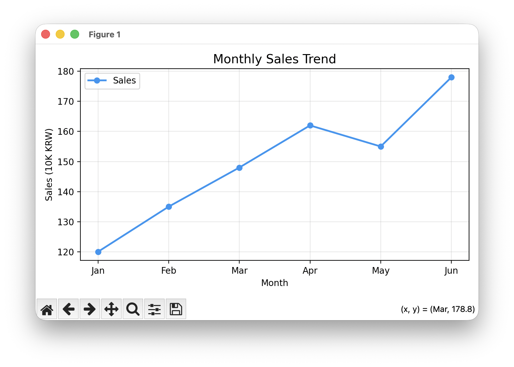
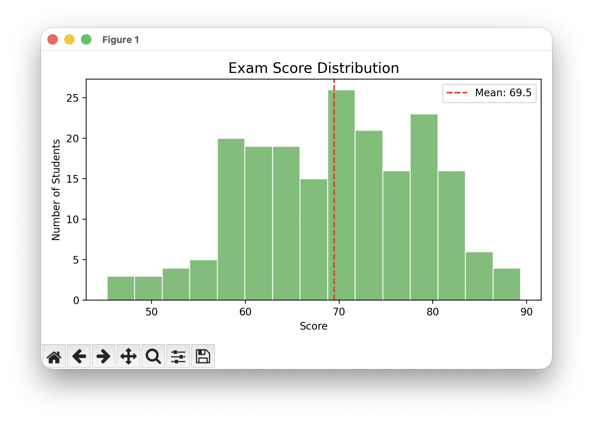
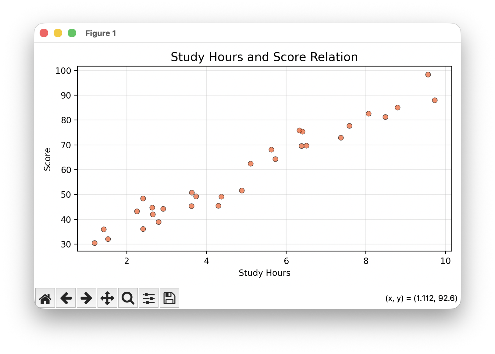
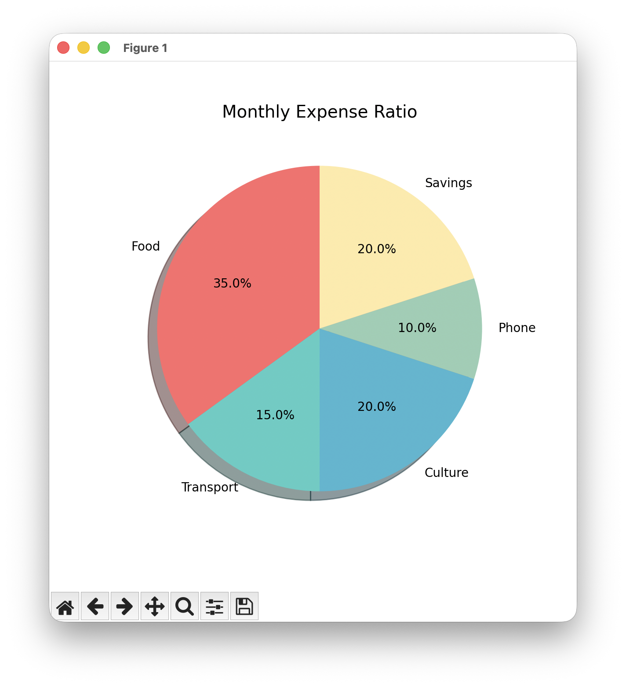
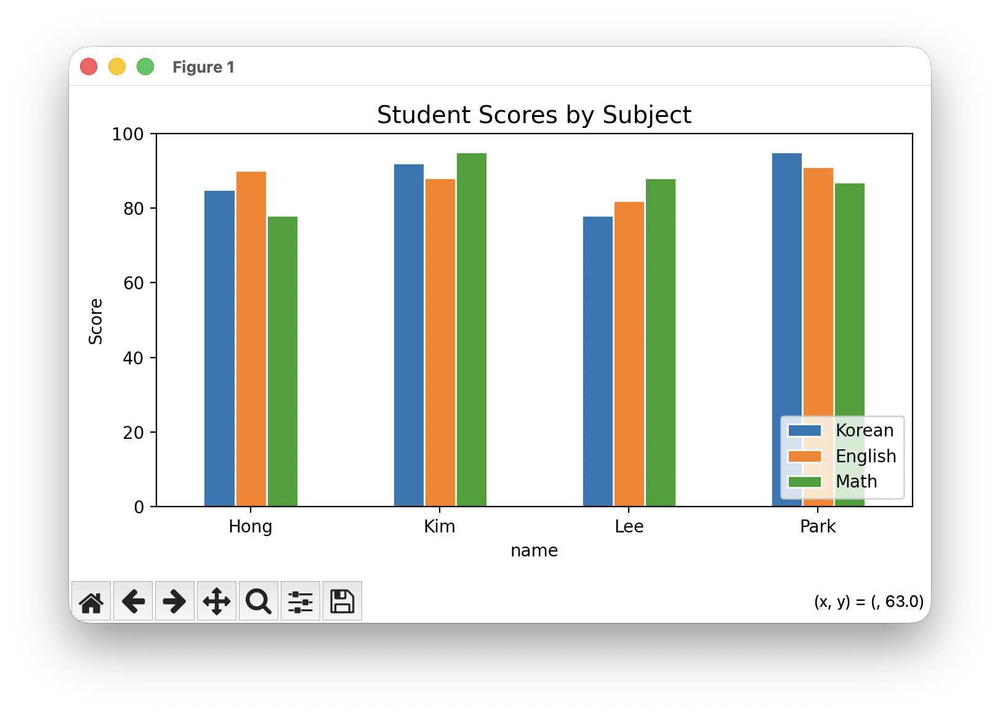
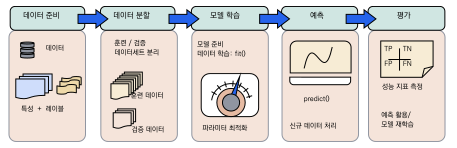
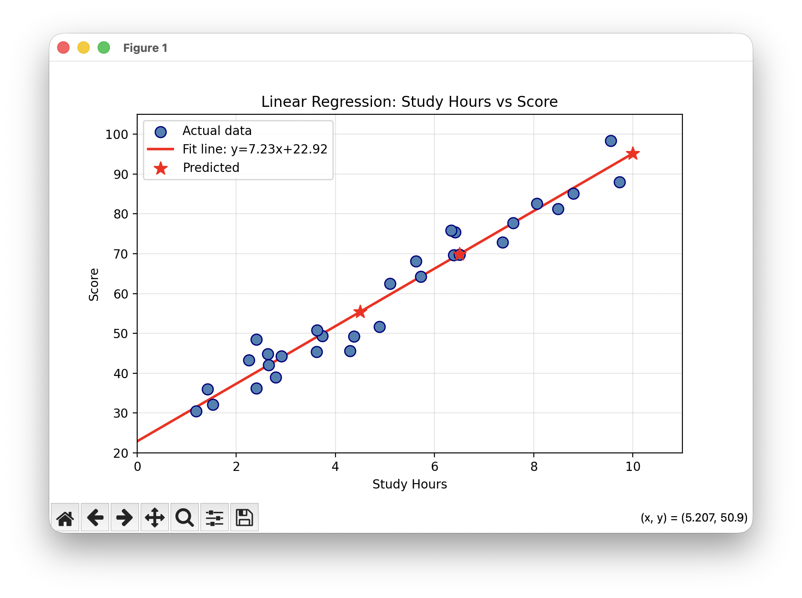

데이터 과학과 파이썬
이 장을 마치면
pandas의DataFrame으로 표 형식 데이터를 다룰 수 있다.matplotlib으로 기본 그래프(선·막대·산점도)를 그릴 수 있다.scikit-learn의 머신러닝 워크플로우를 이해할 수 있다.- 데이터를 읽어 전처리·분석·시각화하는 흐름을 체험할 수 있다.
우리는 매일 엄청난 양의 데이터 속에서 살아가고 있다. 스마트폰의 앱 사용 기록, 온라인 쇼핑의 구매 이력, 소셜 미디어의 게시물, 교통 카드의 이용 내역, 병원의 진료 기록에 이르기까지, 현대 사회의 거의 모든 활동이 데이터로 기록되고 있다. 이 방대한 데이터에서 의미 있는 정보와 지식을 추출하는 학문이 바로 데이터 과학data science이다.
파이썬이 가장 강력하게 활용되는 분야 중 하나가 바로 이 데이터 과학이다. 파이썬은 배우기 쉬운 문법과 더불어, 데이터를 수집하고, 정리하고, 분석하고, 시각화하는 데 필요한 모든 도구를 갖춘 풍부한 라이브러리 생태계를 보유하고 있기 때문이다. 실제로 구글, 넷플릭스, 아마존 등 세계 유수의 기업들이 데이터 분석에 파이썬을 핵심 도구로 사용하고 있으며, 대학과 연구소에서도 파이썬은 데이터 과학의 사실상 표준 언어로 자리잡았다.
이 장에서는 데이터 과학의 전체 작업 흐름을 파이썬으로 직접 체험해 본다. 먼저 데이터 과학이 무엇인지 그 개념과 작업 흐름을 이해한 뒤, 판다스pandas로 표 형태의 데이터를 다루고 정리하는 방법을 배운다. 그 다음 matplotlib으로 데이터를 다양한 그래프로 시각화하고, 마지막으로 사이킷런scikit-learn을 이용한 간단한 머신러닝까지 맛보기로 체험한다.
12.1 데이터 과학이란
데이터 과학data science은 대량의 데이터에서 유용한 정보와 지식을 추출하는 학문 분야이다. 통계학, 컴퓨터 과학, 도메인 지식이 융합된 분야로, 비즈니스, 의료, 금융, 스포츠, 교육 등 거의 모든 분야에서 활용되고 있다. 데이터 과학자는 데이터를 모으고, 정리하고, 분석하여 의미 있는 패턴을 찾아내고, 이를 바탕으로 예측이나 의사결정을 돕는 역할을 한다.
예를 들어, 온라인 쇼핑몰에서 "이 상품을 구매한 고객이 함께 구매한 상품"을 추천하는 기능, 의료 분야에서 환자의 증상 데이터를 분석하여 질병을 조기에 예측하는 시스템, 기상청에서 과거 날씨 데이터를 바탕으로 미래의 날씨를 예측하는 모델 등이 모두 데이터 과학의 산물이다.
데이터 과학의 작업 흐름
데이터 과학 프로젝트는 일반적으로 다음 다섯 단계를 거친다. 이 다섯 단계는 순서대로 진행되기도 하지만, 실제로는 분석 결과에 따라 이전 단계로 돌아가 데이터를 다시 정리하거나 추가 수집하는 반복적인 과정이 되기도 한다.

그림 12.1에서 보듯이, 수집\(\,\rightarrow\,\)정리\(\,\rightarrow\,\)분석\(\,\rightarrow\,\)시각화\(\,\rightarrow\,\)의사결정의 다섯 단계로 구성되며, 분석 결과에 따라 이전 단계로 돌아가는 반복적인 과정이다.
- 데이터 수집: 데이터베이스, 웹 크롤링, IoT 센서, 설문조사 등 다양한 소스에서 데이터를 모은다. 실제 프로젝트에서는 데이터 수집이 전체 작업의 상당 부분을 차지하는 경우가 많다.
- 데이터 정리: 수집된 원시 데이터는 결측값(빠진 값), 이상치(비정상적으로 크거나 작은 값), 중복 데이터, 형식 불일치 등 다양한 문제를 포함하고 있다. 이를 분석 가능한 형태로 가공하는 과정을 데이터 전처리data wrangling라 한다. 데이터 과학자들은 전체 작업 시간의 약 80%를 이 단계에 쓴다고 알려져 있다.
- 데이터 분석: 정리된 데이터에서 통계적 방법이나 머신러닝 알고리즘을 적용하여 패턴과 인사이트를 찾는다. 예를 들어 "어떤 요인이 매출에 가장 큰 영향을 미치는가?", "이 환자가 특정 질병에 걸릴 확률은 얼마인가?" 등의 질문에 답하는 단계이다.
- 데이터 시각화: 분석 결과를 그래프와 차트로 표현하여 직관적으로 이해할 수 있게 한다. 아무리 정교한 분석 결과도 이해하기 어렵게 제시되면 의사결정에 활용되기 어렵다.
- 의사결정: 분석 결과와 시각화를 바탕으로 실질적인 비즈니스 의사결정을 내린다. "어떤 상품을 더 생산할 것인가?", "마케팅 예산을 어디에 집중할 것인가?" 등의 전략적 결정이 이 단계에서 이루어진다.
파이썬이 데이터 과학의 핵심 도구가 된 이유
파이썬은 배우기 쉬운 문법과 더불어, 데이터 과학에 필요한 모든 도구를 갖춘 풍부한 라이브러리 생태계를 보유하고 있다. 다음 표는 데이터 과학의 각 단계에서 사용되는 핵심 파이썬 라이브러리를 정리한 것이다.
| 라이브러리 | 역할 | 주요 기능 |
|---|---|---|
| NumPy | 수치 계산 | 다차원 배열, 벡터화 연산, 수학 함수 |
| pandas | 데이터 분석 | DataFrame, CSV/엑셀 처리, 그룹별 집계 |
| matplotlib | 데이터 시각화 | 선/막대/산점도/원형/히스토그램 그래프 |
| scikit-learn | 머신러닝 | 분류, 회귀, 클러스터링, 모델 평가 |
이 라이브러리들은 모두 pip로 쉽게 설치할 수 있으며, 하나의 통합 배포판인 아나콘다Anaconda를 설치하면 한꺼번에 사용할 수 있다. 특히 이 네 가지 라이브러리는 서로 긴밀하게 연동된다. 넘파이 배열은 판다스 DataFrame의 내부 자료구조이고, matplotlib은 판다스 DataFrame에서 직접 그래프를 그릴 수 있으며, 사이킷런은 넘파이 배열과 판다스 DataFrame을 입력으로 받아 머신러닝 모델을 학습시킨다.
$ pip install numpy pandas matplotlib scikit-learn
데이터 과학은 데이터 수집 \(\rightarrow\) 정리 \(\rightarrow\) 분석 \(\rightarrow\) 시각화 \(\rightarrow\) 의사결정의 흐름으로 이루어진다. 파이썬은 NumPy, pandas, matplotlib, scikit-learn 등의 풍부한 라이브러리 덕분에 데이터 과학 분야의 사실상 표준 언어로 자리잡았다. 이 라이브러리들은 서로 긴밀하게 연동되어 데이터 분석의 전 과정을 파이썬 하나로 수행할 수 있게 해 준다.
12.2 판다스로 데이터 다루기
판다스pandas는 표 형태의 데이터를 다루는 데 특화된 라이브러리이다. "pandas"라는 이름은 "Panel Data"(패널 데이터)에서 유래하였으며, 엑셀 스프레드시트처럼 행과 열로 이루어진 데이터를 효율적으로 처리할 수 있다. 판다스는 2008년에 금융 데이터 분석을 위해 개발되었으며, 현재는 데이터 과학의 모든 분야에서 필수적으로 사용되는 라이브러리가 되었다.
이 절에서는 판다스의 핵심 자료구조인 Series와 DataFrame을 배우고, CSV 파일을 읽고 쓰는 방법, 그리고 데이터를 탐색하고 필터링하는 방법을 단계적으로 익힌다.
Series와 DataFrame
판다스의 핵심 자료구조는 Series(1차원)와 DataFrame(2차원)이다. Series는 인덱스가 있는 1차원 배열로, 넘파이의 1차원 배열에 이름표(인덱스)를 붙인 것과 같다. DataFrame은 여러 개의 Series가 열로 묶인 2차원 표 구조로, 엑셀의 시트와 유사하다.
먼저 Series를 만들어 보자.
import pandas as pd
# Series: 인덱스가 있는 1차원 데이터
s = pd.Series([85, 92, 78, 88],
index=['Korean', 'English', 'Math', 'Science'])
print(s)
print(f'\nKorean score: {s["Korean"]}')
print(f'Mean: {s.mean():.1f}')Korean 85 English 92 Math 78 Science 88 dtype: int64 Korean score: 85 Mean: 85.8
Series는 딕셔너리처럼 인덱스(이름)로 값에 접근할 수 있으며, 넘파이 배열처럼 mean(), sum() 등의 수학 연산도 지원한다.
이제 여러 Series를 묶어 2차원 표 형태의 DataFrame을 만들어 보자.
# DataFrame: 2차원 표 형태 데이터
data = {
'name': ['Hong Gildong', 'Kim Cheolsu',
'Lee Younghee', 'Park Jimin'],
'Korean': [85, 92, 78, 95],
'English': [90, 88, 82, 91],
'Math': [78, 95, 88, 87]
}
df = pd.DataFrame(data)
print(df)name Korean English Math 0 Hong Gildong 85 90 78 1 Kim Cheolsu 92 88 95 2 Lee Younghee 78 82 88 3 Park Jimin 95 91 87

그림 12.2은 DataFrame의 구조를 시각적으로 보여 준다. DataFrame은 행 인덱스와 열 이름으로 구성된 2차원 표 구조이며, 각 열은 하나의 Series에 해당한다. DataFrame을 만드는 가장 일반적인 방법은 위와 같이 딕셔너리를 사용하는 것이다. 딕셔너리의 키가 열 이름이 되고, 값(리스트)이 각 열의 데이터가 된다. 왼쪽의 0, 1, 2, 3은 자동으로 생성된 행 인덱스이다.
CSV 파일 읽기/쓰기
판다스의 가장 강력한 기능 중 하나는 CSV 파일을 단 한 줄의 코드로 읽고 쓸 수 있다는 것이다. CSV(Comma-Separated Values) 파일은 데이터를 쉼표로 구분하여 저장하는 텍스트 파일 형식으로, 엑셀에서도 열 수 있어 데이터 교환에 널리 사용된다.
# DataFrame을 CSV 파일로 저장
df.to_csv('scores.csv', index=False, encoding='utf-8-sig')
# CSV 파일을 읽어 DataFrame 생성
df2 = pd.read_csv('scores.csv')
print(df2)df.to_csv()에서 index=False는 행 인덱스(0, 1, 2,...)를 파일에 쓰지 않도록 한다.
encoding=\allowbreak'utf-8-sig'는 엑셀에서 파일을 열 때 한글이 깨지지 않도록 BOM을 추가한다.
pd.read_csv()는 CSV 파일을 읽어 자동으로 DataFrame을 생성한다. 열 이름, 자료형 추론, 결측값 처리 등을 자동으로 수행해 주므로 매우 편리하다.
데이터 탐색
데이터를 불러온 후 가장 먼저 할 일은 데이터의 구조와 내용을 파악하는 것이다. 이 과정을 탐색적 데이터 분석Exploratory Data Analysis, EDA이라 한다. 판다스는 데이터를 빠르게 파악할 수 있는 다양한 메소드를 제공한다.
print(df.head(2)) # 처음 2행
print(df.tail(2)) # 마지막 2행
print(df.shape) # (행 수, 열 수)
print(df.info()) # 열의 타입과 결측값 정보
print(df.describe()) # 수치형 열의 통계 요약 name Korean English Math
0 Hong Gildong 85 90 78
1 Kim Cheolsu 92 88 95
(4, 4)
Korean English Math
count 4.00 4.00 4.00
mean 87.50 87.75 87.00
std 7.59 3.86 7.07
min 78.00 82.00 78.00
max 95.00 91.00 95.00
각 메소드의 역할을 자세히 살펴보자.
head(n)은 처음 n개의 행을 보여 주어 데이터의 형태를 빠르게 파악할 수 있다. 인자를 생략하면 기본 5행을 보여 준다.
tail(n)은 마지막 n개의 행을 보여 준다.
shape은 (행 수, 열 수)를 튜플로 반환하여 데이터의 크기를 알려 준다.
info()는 각 열의 이름, 데이터 타입, 결측값이 아닌 값의 수를 보여 준다.
describe()는 수치형 열에 대해 개수count, 평균mean, 표준편차std, 최솟값min, 최댓값max 등의 기술 통계를 한 번에 계산해 준다.
데이터 선택과 필터링
DataFrame에서 원하는 데이터를 선택하는 방법은 크게 열 선택, 행 선택, 조건 필터링의 세 가지이다.
# 열 선택
print(df['name']) # 열 하나 -> Series
print(df[['name', 'Korean']]) # 열 여러 개 -> DataFrame
# 행 선택
print(df.loc[0]) # 레이블 인덱스 0의 행
print(df.iloc[0:2]) # 위치 기반 행 선택 (0~1)
# 조건 필터링
print(df[df['Korean'] >= 90]) # 국어 점수 90 이상인 학생0 Hong Gildong
1 Kim Cheolsu
2 Lee Younghee
3 Park Jimin
Name: name, dtype: object
name Korean
0 Hong Gildong 85
1 Kim Cheolsu 92
2 Lee Younghee 78
3 Park Jimin 95
name Korean English Math
1 Kim Cheolsu 92 88 95
3 Park Jimin 95 91 87
열 선택에서 대괄호 하나(df['name'])를 사용하면 Series가 반환되고, 대괄호 두 개(df[['name', 'Korean']])를 사용하면 DataFrame이 반환된다.
loc은 레이블(이름) 기반으로 행을 선택하고, iloc은 정수 위치 기반으로 행을 선택한다.
조건 필터링 df[df['Korean'] >= 90]은 넘파이의 불리언 인덱싱과 동일한 원리로, 조건을 만족하는 행만 추출한다.
이 문법은 데이터 분석에서 "특정 조건을 만족하는 데이터만 보고 싶다"는 요구를 간결하게 표현할 수 있어 매우 빈번하게 사용된다.
- DataFrame은 행과 열로 이루어진 표 형태의 핵심 자료구조이다.
pd.read_csv()로 CSV 파일을 읽고,df.to_csv()로 저장한다.df.head(),df.info(),df.describe()로 데이터를 빠르게 파악한다.df[조건]으로 원하는 행을 필터링하며,loc과iloc으로 특정 행/열을 선택한다.
12.3 데이터 정리와 가공
실제 데이터는 교과서에 나오는 깔끔한 데이터와 다르다. 결측값(빠진 값), 잘못된 형식, 중복 데이터, 이상치 등 다양한 문제를 포함하고 있다. 이를 분석 가능한 형태로 만드는 과정을 데이터 전처리data wrangling라 하며, 데이터 과학자들이 가장 많은 시간을 쏟는 단계이기도 하다.
이 절에서는 결측값을 발견하고 처리하는 방법, 데이터를 정렬하고 새로운 열을 추가하는 방법, 그리고 그룹별로 데이터를 집계하는 방법을 단계적으로 배운다. 각 단계에서 판다스가 제공하는 메소드를 사용하되, 그 메소드가 왜 필요하고 어떤 상황에서 사용하는지를 함께 이해하는 것이 중요하다.
실습 데이터 준비
결측값이 포함된 학생 성적 데이터를 직접 만들어 보자.
np.nan은 넘파이에서 제공하는 "값이 없음"을 나타내는 특별한 값으로, 실제 데이터에서 설문 응답 누락, 센서 오류, 입력 실수 등의 이유로 빈번하게 발생한다.
import pandas as pd
import numpy as np
data = {
'name': ['Hong Gildong', 'Kim Cheolsu', 'Lee Younghee',
'Park Jimin', 'Choi Suhyun'],
'year': [1, 2, 1, 3, 2],
'Korean': [85, 92, np.nan, 95, 78],
'English': [90, np.nan, 82, 91, 88],
'Math': [78, 95, 88, np.nan, 92]
}
df = pd.DataFrame(data)
print(df)name year Korean English Math 0 Hong Gildong 1 85.0 90.0 78.0 1 Kim Cheolsu 2 92.0 NaN 95.0 2 Lee Younghee 1 NaN 82.0 88.0 3 Park Jimin 3 95.0 91.0 NaN 4 Choi Suhyun 2 78.0 88.0 92.0
출력 결과에서 NaN(Not a Number)이 결측값을 나타낸다.
Kim Cheolsu는 영어 점수가, Lee Younghee는 국어 점수가, Park Jimin은 수학 점수가 빠져 있다.
실제 데이터에서는 이보다 훨씬 많은 결측값이 존재하는 경우가 대부분이다.
결측값 확인과 처리
결측값을 처리하기 위해서는 먼저 어디에 얼마나 있는지 확인해야 한다.
# 결측값 확인
print(df.isnull().sum()) # 열별 결측값 개수name 0 year 0 Korean 1 English 1 Math 1 dtype: int64
df.isnull()은 각 셀이 결측값인지 여부를 True/False로 반환하고, .sum()은 각 열에서 True의 개수를 세어 결측값의 개수를 알려 준다.
국어, 영어, 수학 각각 1개씩의 결측값이 있음을 확인할 수 있다.
결측값 처리 방법은 크게 두 가지이다.

그림 12.3은 두 가지 처리 방법을 비교한 것이다. 데이터가 충분하면 결측값이 있는 행을 삭제하고, 데이터가 부족하면 평균 등으로 대체하는 전략을 사용한다. 상황에 따라 적합한 방법을 선택해야 한다.
방법 1: 결측값이 있는 행 삭제 (dropna)
df_dropped = df.dropna()
print('dropna result:')
print(df_dropped)dropna result:
name year Korean English Math
0 Hong Gildong 1 85.0 90.0 78.0
4 Choi Suhyun 2 78.0 88.0 92.0
dropna()는 결측값이 하나라도 있는 행을 통째로 삭제한다.
위 결과에서 5명 중 결측값이 없는 2명만 남은 것을 볼 수 있다.
이 방법은 데이터가 충분히 많고 결측값이 적을 때 적합하다.
하지만 위 예시처럼 데이터가 적을 때는 유효한 데이터까지 함께 삭제되는 문제가 있다.
방법 2: 결측값을 특정 값으로 채우기 (fillna)
# 0으로 채우기
df_filled = df.fillna(0)
print('fillna(0) result:')
print(df_filled)
# 열 평균으로 채우기 (더 합리적)
df_mean = df.copy()
df_mean['Korean'] = df_mean['Korean'].fillna(
df_mean['Korean'].mean())
df_mean['English'] = df_mean['English'].fillna(
df_mean['English'].mean())
df_mean['Math'] = df_mean['Math'].fillna(
df_mean['Math'].mean())
print('\nfillna(mean) result:')
print(df_mean)fillna(0) result:
name year Korean English Math
0 Hong Gildong 1 85.0 90.0 78.0
1 Kim Cheolsu 2 92.0 0.0 95.0
2 Lee Younghee 1 0.0 82.0 88.0
3 Park Jimin 3 95.0 91.0 0.0
4 Choi Suhyun 2 78.0 88.0 92.0
fillna(mean) result:
name year Korean English Math
0 Hong Gildong 1 85.0 90.00 78.00
1 Kim Cheolsu 2 92.0 87.75 95.00
2 Lee Younghee 1 87.5 82.00 88.00
3 Park Jimin 3 95.0 91.00 88.25
4 Choi Suhyun 2 78.0 88.00 92.00
0으로 채우는 것은 간단하지만, 성적 데이터에서 0은 "시험을 보지 않았다"가 아니라 "0점을 받았다"로 해석될 수 있으므로 주의해야 한다. 평균으로 채우는 방법은 전체 통계에 미치는 영향을 최소화하면서 결측값을 처리할 수 있어 더 합리적인 경우가 많다.
데이터 정렬과 열 추가
정리된 데이터에 새로운 정보를 추가하거나 원하는 기준으로 정렬하는 작업도 빈번하게 수행한다.
# 국어 점수 기준 내림차순 정렬
df_sorted = df.sort_values('Korean', ascending=False)
print(df_sorted)
# 새 열 추가: 평균 점수 계산
df['average'] = df[['Korean', 'English', 'Math']].mean(axis=1)
print(df[['name', 'average']]) name year Korean English Math
3 Park Jimin 3 95.0 91.0 NaN
1 Kim Cheolsu 2 92.0 NaN 95.0
0 Hong Gildong 1 85.0 90.0 78.0
4 Choi Suhyun 2 78.0 88.0 92.0
2 Lee Younghee 1 NaN 82.0 88.0
name average
0 Hong Gildong 84.33
1 Kim Cheolsu 93.50
2 Lee Younghee 85.00
3 Park Jimin 93.00
4 Choi Suhyun 86.00
sort_values('Korean',\allowbreak{} ascending=\allowbreak{}False)는 국어 점수를 기준으로 내림차순 정렬한다.
ascending=\allowbreak{}True(기본값)이면 오름차순, False이면 내림차순이다.
df[['Korean', 'English', 'Math']].mean(axis=1)에서 axis=1은 행 방향(각 학생별)으로 평균을 구하라는 의미이다.
axis=0이면 열 방향(각 과목별)으로 계산한다.
여기서 중요한 점은 결측값이 자동으로 제외된다는 것이다.
Kim Cheolsu의 경우 영어 점수가 없으므로 국어(92)와 수학(95)의 평균인 93.5가 계산된다.
그룹별 집계: groupby()
groupby()는 데이터 분석에서 가장 강력한 기능 중 하나이다.
특정 열의 값을 기준으로 데이터를 그룹화하고, 각 그룹에 대해 집계 연산(합계, 평균, 개수 등)을 수행한다.
예를 들어 "학년별 평균 점수는 얼마인가?"라는 질문에 답할 수 있다.
# 학년별 국어 점수 평균
print(df.groupby('year')['Korean'].mean())
# 학년별 모든 수치형 열의 평균
print(df.groupby('year')[['Korean', 'English', 'Math']].mean())year
1 85.0
2 85.0
3 95.0
Name: Korean, dtype: float64
Korean English Math
year
1 85.0 86.0 83.0
2 85.0 88.0 93.5
3 95.0 91.0 NaN
groupby('year')는 학년year 열의 값(1, 2, 3)을 기준으로 데이터를 세 개의 그룹으로 나눈다.
그 뒤에 ['Korean'].mean()을 붙이면 각 그룹에서 국어 점수의 평균을 계산한다.
여러 열을 동시에 집계하려면 [['Korean', 'English', 'Math']].mean()처럼 열 이름 리스트를 전달한다.
이 기능은 엑셀의 피벗 테이블과 유사한 역할을 하며, SQL의 GROUP BY 절에 해당한다.
데이터 분석에서 "그룹별로 비교하기"는 가장 기본적이면서도 강력한 분석 기법이다.
df.isnull().sum()으로 열별 결측값 개수를 확인한다.dropna()는 결측값이 있는 행을 삭제하고,fillna()는 특정 값이나 평균으로 채운다.sort_values()로 정렬하고,df['새열'] = 값으로 새 열을 추가한다.groupby('열').집계함수()로 그룹별 통계를 구할 수 있으며, 이는 데이터 분석의 핵심 기법이다.
dropna()를 사용하면 유효한 데이터까지 함께 삭제될 수 있다.
데이터가 적을 때는 fillna()로 평균이나 중앙값을 채우는 방법이 더 적절할 수 있다.
어떤 방법이 최선인지는 데이터의 특성과 분석 목적에 따라 달라지므로, 상황에 맞게 판단해야 한다.
12.4 데이터 시각화
데이터를 그래프로 표현하면 숫자만으로는 파악하기 어려운 패턴과 추세를 직관적으로 이해할 수 있다. 같은 평균 점수 85점이라도, 모든 과목이 균등한 85점인지, 국어 100점에 수학 70점인지는 그래프로 보면 한눈에 드러난다. 이 절에서는 matplotlib을 이용한 다양한 그래프를 판다스 DataFrame과 연동하여 그려 본다. 각 그래프 유형이 어떤 데이터에 적합한지, 그리고 각 매개변수가 그래프의 어떤 부분을 제어하는지를 자세히 설명한다.
선 그래프: 시간에 따른 변화
선 그래프는 시간에 따른 데이터의 변화를 보여 주는 데 가장 적합하다. 월별 매출, 일별 기온, 연도별 인구 변화 등 시계열 데이터를 표현할 때 사용한다.
import matplotlib.pyplot as plt
months = ['Jan', 'Feb', 'Mar', 'Apr', 'May', 'Jun']
sales = [120, 135, 148, 162, 155, 178]
plt.figure(figsize=(7, 4))
plt.plot(months, sales, marker='o', color='\#2196F3',
linewidth=2, label='Sales')
plt.title('Monthly Sales Trend', fontsize=14)
plt.xlabel('Month')
plt.ylabel('Sales (10K KRW)')
plt.grid(True, alpha=0.3)
plt.legend()
plt.tight_layout()
plt.show()
이 코드의 각 매개변수가 그래프에 미치는 영향을 살펴보자.
figsize=(7, 4)는 그래프 창의 크기를 가로 7인치, 세로 4인치로 설정한다.
값이 클수록 그래프가 크게 그려진다.
marker='o'는 각 데이터 점에 원형 마커를 표시하여 개별 값을 구분할 수 있게 한다.
마커를 's'로 바꾸면 사각형, '\^{}로 바꾸면 삼각형이 된다.
color='#2196F3'는 선의 색상을 지정하며, HTML 색상 코드를 사용한다.
linewidth=2는 선의 굵기를 2포인트로 설정한다.
grid(True, alpha=0.3)은 격자선을 표시하되 투명도를 0.3으로 하여 은은하게 보이도록 한다.
alpha 값은 0(완전 투명)부터 1(완전 불투명) 사이의 값이다.
tight_layout()은 제목, 축 이름 등이 잘리지 않도록 여백을 자동으로 조정한다. 위 코드를 실행하면 그림 12.4에 보인 것과 같은 선 그래프가 그려진다.
히스토그램: 데이터 분포 확인
히스토그램은 데이터의 분포를 확인할 때 사용한다. 데이터를 일정한 구간bin으로 나누고, 각 구간에 속하는 데이터의 개수를 막대로 표시한다. 시험 점수 분포, 키 분포, 급여 분포 등을 파악할 때 유용하다.
import numpy as np
import matplotlib.pyplot as plt
# 평균 70, 표준편차 10인 난수 점수 200개 생성
scores = np.random.normal(70, 10, 200)
plt.figure(figsize=(7, 4))
plt.hist(scores, bins=15, color='\#4CAF50', edgecolor='white',
alpha=0.8)
plt.title('Exam Score Distribution', fontsize=14)
plt.xlabel('Score')
plt.ylabel('Number of Students')
plt.axvline(scores.mean(), color='red', linestyle='--',
label=f'Mean: {scores.mean():.1f}')
plt.legend()
plt.tight_layout()
plt.show()
bins=15는 데이터를 15개의 구간으로 나누라는 의미이다.
bins 값이 작으면 큰 그림이 보이고, 크면 세밀한 분포가 드러난다.
edgecolor='white'는 각 막대의 테두리를 흰색으로 하여 막대 간 구분을 명확하게 한다.
plt.axvline()은 수직선을 그리는 함수로, 여기서는 빨간 점선으로 평균값의 위치를 표시한다.
linestyle='–'는 점선을 의미하며, '-'는 실선, ':'는 점선, '-.' 는 일점쇄선이다.
np.random.normal(70, 10, 200)은 평균 70, 표준편차 10인 정규분포를 따르는 난수 200개를 생성한다.
이 함수는 시뮬레이션 데이터를 만들 때 자주 사용된다. 위 코드의 실행 결과는 그림 12.5에 보인 것과 같다.
산점도: 두 변수 간의 관계
산점도는 두 변수 사이의 관계를 파악하는 데 사용한다. 각 데이터를 점으로 표시하여, 양의 상관관계(함께 증가), 음의 상관관계(반대로 변화), 또는 상관 없음을 시각적으로 확인할 수 있다.
import matplotlib.pyplot as plt
import numpy as np
np.random.seed(42)
study_hours = np.random.uniform(1, 10, 30)
scores = study_hours * 8 + np.random.normal(0, 5, 30) + 20
plt.figure(figsize=(7, 4))
plt.scatter(study_hours, scores, color='\#FF5722', alpha=0.7,
edgecolors='black', linewidth=0.5)
plt.title('Study Hours and Score Relation', fontsize=14)
plt.xlabel('Study Hours')
plt.ylabel('Score')
plt.grid(True, alpha=0.3)
plt.tight_layout()
plt.show()
plt.scatter()의 alpha=0.7은 점의 투명도를 설정한다.
데이터가 많아 점이 겹칠 때 투명도를 낮추면 밀집 정도를 확인할 수 있다.
edgecolors='black'와 linewidth=0.5는 각 점에 얇은 검정 테두리를 추가하여 점을 구분하기 쉽게 한다.
위 그래프에서 공부 시간이 늘어날수록 점수도 높아지는 우상향 패턴이 보인다면, 이는 두 변수 사이에 양의 상관관계가 있다는 것을 의미한다. 이러한 관계를 수학적으로 모델링하는 것이 뒤에서 배울 선형 회귀이다. 위 코드를 실행하면 그림 12.6에 보인 것과 같은 산점도를 얻을 수 있다.
원형 그래프: 비율 표현
원형 그래프(파이 차트)는 전체에서 각 항목이 차지하는 비율을 표현할 때 사용한다. 지출 비율, 시장 점유율, 설문 응답 비율 등을 나타낼 때 적합하다.
import matplotlib.pyplot as plt
categories = ['Food', 'Transport', 'Culture', 'Phone', 'Savings']
amounts = [35, 15, 20, 10, 20]
colors = ['#FF6B6B', '#4ECDC4', '#45B7D1',
'#96CEB4', '#FFEAA7']
plt.figure(figsize=(6, 6))
plt.pie(amounts, labels=categories, colors=colors,
autopct='%1.1f%%', startangle=90, shadow=True)
plt.title('Monthly Expense Ratio', fontsize=14)
plt.show()
autopct='%1.1f%%'는 각 조각에 비율을 소수점 1자리까지 표시한다.
startangle=90은 첫 번째 조각의 시작 각도를 12시 방향(90도)으로 설정한다.
shadow=True는 그림자 효과를 추가하여 입체감을 준다. 위 코드를 실행하면 그림 12.7에 보인 것과 같은 원형 그래프가 그려진다.
판다스와 연동한 시각화
판다스 DataFrame에서 바로 그래프를 그릴 수도 있다.
df.plot() 메소드는 내부적으로 matplotlib을 호출하여, DataFrame의 데이터를 직접 그래프로 변환한다.
import pandas as pd
import matplotlib.pyplot as plt
df = pd.DataFrame({
'name': ['Hong', 'Kim', 'Lee', 'Park'],
'Korean': [85, 92, 78, 95],
'English': [90, 88, 82, 91],
'Math': [78, 95, 88, 87]
})
df.set_index('name')[['Korean', 'English', 'Math']].plot.bar(
figsize=(7, 4), rot=0, edgecolor='white')
plt.title('Student Scores by Subject', fontsize=14)
plt.ylabel('Score')
plt.ylim(0, 100)
plt.legend(loc='lower right')
plt.tight_layout()
plt.show()
df.set_index('name')은 이름 열을 인덱스로 설정하여 x축에 학생 이름이 표시되도록 한다.
.plot.bar()는 DataFrame의 각 열을 그룹별 막대로 그린다.
rot=0은 x축 레이블의 회전 각도를 0도(수평)로 설정한다.
이 밖에도 df.plot(), df.plot.scatter(), df.plot.hist() 등을 사용할 수 있다. 위 코드의 실행 결과는 그림 12.8에 보인 것과 같다.
plt.plot()— 선 그래프 (시계열 데이터에 적합)plt.bar()— 막대 그래프 (범주별 비교)plt.hist()— 히스토그램 (데이터 분포 확인)plt.scatter()— 산점도 (두 변수 간의 관계)plt.pie()— 원형 그래프 (비율 표현)- 판다스 DataFrame에서
df.plot()메소드로 직접 그래프를 그릴 수 있다. - 그래프의 목적에 맞는 유형을 선택하는 것이 효과적인 시각화의 핵심이다.
12.5 머신러닝 맛보기
머신러닝machine learning은 데이터에서 패턴을 자동으로 학습하여 새로운 데이터에 대해 예측하는 기술이다. 사람이 규칙을 직접 프로그래밍하는 것이 아니라, 데이터를 통해 컴퓨터가 스스로 규칙을 발견하게 한다는 점에서 전통적인 프로그래밍과 근본적으로 다르다. 이 절에서는 파이썬의 사이킷런scikit-learn 라이브러리를 이용하여 간단한 머신러닝을 체험해 본다.
머신러닝의 기본 개념
머신러닝의 가장 기본적인 형태는 지도학습supervised learning이다. 지도학습은 입력 데이터(특성feature)와 정답(레이블label)이 쌍으로 주어진 훈련 데이터로 모델을 학습시킨 뒤, 새로운 데이터의 정답을 예측하는 방식이다.
예를 들어 과거 시험 데이터에서 "공부 시간"이 특성이고 "시험 점수"가 레이블이라면, 모델은 공부 시간과 점수 사이의 관계를 학습하여, 새로운 학생이 5시간 공부했을 때 점수를 예측할 수 있다.
지도학습은 예측하는 값의 종류에 따라 두 가지로 나뉜다. 분류classification는 "이 이메일은 스팸인가 아닌가?"처럼 범주를 예측하고, 회귀regression는 "이 학생이 5시간 공부하면 몇 점을 받을까?"처럼 연속적인 수치를 예측한다. 이 절에서는 가장 직관적인 회귀 문제를 다룬다.
머신러닝의 작업 흐름은 다음 다섯 단계로 이루어진다.

그림 12.9은 이 절에서 실습할 머신러닝의 작업 흐름을 보여 준다. 데이터를 준비하고, 산점도로 경향을 관찰한 뒤, 모델을 학습시켜 예측하고, 결과를 시각화하여 평가한다.
데이터 준비
이 절에서는 앞서 12.4절 산점도 단원에서 다룬 코드 12.14에서 생성한 공부 시간 study_hours와 시험 점수 scores 데이터를 그대로 사용한다.
np.random.seed(42)로 난수를 고정한 뒤 np.random.uniform(1, 10, 30)으로 (30)명의 공부 시간을 만들고, 점수는 공부 시간에 비례하도록 study_hours * 8 + np.random.normal(0, 5, 30) + 20으로 생성하였다.
산점도(그림 12.6)에서 이미 양의 상관관계가 뚜렷하게 나타났으므로, 이 데이터에 직선을 학습시켜 두 변수 사이의 관계를 하나의 모델로 표현해 보자.
선형 회귀 모델 학습
선형 회귀linear regression는 데이터의 경향을 직선(1차 함수 \(y = ax + b\))으로 모델링하는 가장 기본적인 머신러닝 알고리즘이다.
사이킷런의 LinearRegression을 사용하면 최적의 기울기 \(a\)와 절편 \(b\)를 자동으로 찾아 준다.
import numpy as np
import matplotlib.pyplot as plt
from sklearn.linear_model import LinearRegression
# 코드 12.14에서 사용한 데이터
np.random.seed(42)
study_hours = np.random.uniform(1, 10, 30)
scores = study_hours * 8 + np.random.normal(0, 5, 30) + 20
# reshape: 사이킷런의 특성 데이터는 2차원 배열이어야 함
X = study_hours.reshape(-1, 1) # (30, 1) 열 벡터
y = scores
# 모델 학습
model = LinearRegression()
model.fit(X, y)
# 모델 파라미터
a = model.coef_[0] # 기울기
b = model.intercept_ # 절편
print(f'Regression line: y = {a:.2f}x + {b:.2f}')Regression line: y = 7.23x + 22.92
model.fit(X, y)가 학습의 핵심이다.
이 한 줄 안에서 사이킷런은 데이터 점들과 직선 사이의 거리(오차)의 합이 최소가 되는 기울기와 절편을 찾는다.
학습이 완료되면 model.coef_에 기울기(7.23), model.intercept_에 절편(22.92)이 저장된다.
즉, 이 모델은 \(y = 7.23x + 22.92\)이라는 직선으로 공부 시간과 점수의 관계를 표현한다.
study_hours.reshape(-1, 1)은 1차원 배열을 2차원 열 벡터([[1], [2],...] 모양)로 변환한다.
사이킷런은 특성 데이터가 2차원 배열(샘플 수 \(\times\) 특성 수) 형태여야 하므로 이 변환이 필요하다.
예측과 시각화
이어서 학습된 model을 그대로 사용하여 새로운 공부 시간에 대한 점수를 예측하고, 산점도 위에 회귀선fit line을 겹쳐 그려 보자.
# 새로운 공부 시간에 대한 점수 예측
new_hours = np.array([[4.5], [6.5], [10]])
predictions = model.predict(new_hours)
print('Predictions:')
for h, s in zip(new_hours.flatten(), predictions):
print(f' Study {h:.1f} hours -> {s:.1f} points')
# 그래프: 산점도 + 회귀선
plt.figure(figsize=(8, 5))
# 원본 데이터 (산점도)
plt.scatter(study_hours, scores, color='steelblue', s=80,
edgecolors='navy', label='Actual data', zorder=3)
# 회귀선
line_x = np.linspace(0, 10, 100).reshape(-1, 1)
line_y = model.predict(line_x)
plt.plot(line_x, line_y, color='red', linewidth=2,
label=f'Fit line: y={a:.2f}x+{b:.2f}')
# 예측된 점
plt.scatter(new_hours, predictions, color='red', s=120,
marker='*', zorder=4, label='Predicted')
plt.xlabel('Study Hours')
plt.ylabel('Score')
plt.title('Linear Regression: Study Hours vs Score')
plt.legend()
plt.grid(True, alpha=0.3)
plt.xlim(0, 11)
plt.ylim(20, 105)
plt.show()Predictions: Study 4.5 hours -> 55.4 points Study 6.5 hours -> 69.9 points Study 10.0 hours -> 95.2 points

시각화 결과에서 파란 점은 실제 데이터, 빨간 직선은 모델이 학습한 회귀선, 빨간 별은 새로운 입력에 대한 예측값이다. 데이터 점들이 직선 근처에 모여 있을수록 모델의 예측이 정확하다는 것을 의미한다.
np.linspace(0, 10, 100)은 0에서 10까지 균등한 간격의 100개 점을 생성하여 매끄러운 직선을 그리는 데 사용한다.
model.predict(line_x)로 이 100개 점 각각에 대한 y값을 계산하면, 산점도 위에 회귀선을 겹쳐 그릴 수 있다. 위 코드를 실행하면 그림 12.10에 보인 것과 같이 회귀선과 예측값이 함께 표시된다.
모델의 정확도 평가
모델이 얼마나 잘 맞는지 수치로 평가하려면 결정 계수 \(R^2\)를 사용한다. \(R^2\)는 0에서 1 사이의 값으로, 1에 가까울수록 모델이 데이터를 잘 설명한다는 의미이다.
r2 = model.score(X, y)
print(f'R-squared: {r2:.4f}')R-squared: 0.9510
\(R^2 = 0.9510\)은 이 직선이 데이터 변동의 약 95%를 설명한다는 뜻이다. 공부 시간과 점수 사이에 매우 강한 선형 관계가 있음을 확인할 수 있다.
다음 단계
이 장에서 체험한 것은 머신러닝의 아주 기초적인 부분이다. 더 깊이 공부하고 싶다면 다음 분야를 탐색해 보자.
- 다중 회귀: 특성이 여러 개인 경우 (예: 공부 시간 + 수면 시간 \(\rightarrow\) 점수)
- 분류classification: 범주를 예측하는 문제 (예: 스팸 메일 분류, 이미지 인식)
- 딥러닝deep learning: 인공 신경망을 이용한 고급 머신러닝으로, 이미지 인식, 자연어 처리 등에서 뛰어난 성능을 보인다. TensorFlow, PyTorch가 대표적인 프레임워크이다.
- 자연어 처리NLP: 텍스트 데이터를 분석하고 이해하는 기술이다. ChatGPT와 같은 대규모 언어 모델LLM이 이 분야의 산물이다.
회귀 문제에서는 (R^2)로 모델이 데이터를 얼마나 잘 설명하는지 평가한다. 그러나 분류classification 문제에서는 단순히 정답 비율(정확도accuracy)만 보면 안 되는 경우가 많다. 예컨대 1000명 중 10명만 양성인 데이터에서 모두 "음성"이라고 답해도 정확도는 99%지만, 정작 찾아야 할 양성을 한 명도 맞추지 못한다. 이런 한계를 보완하기 위해 다음 세 지표가 함께 쓰인다.
정밀도precision는 모델이 양성이라고 예측한 것 중 실제로 양성인 비율이다. 식으로는 \[\text{Precision} = \frac{\text{TP}}{\text{TP} + \text{FP}}\] 이며 여기서 (TP)True Positive는 양성을 양성으로 맞춘 경우, (FP)False Positive는 음성인데 양성이라고 잘못 예측한 경우이다. 스팸 필터에서 정밀도가 낮으면 정상 메일이 자꾸 스팸함으로 분류되어 사용자가 불편을 겪는다.
재현율recall은 실제 양성 중에서 모델이 양성이라고 맞춘 비율이다. \[\text{Recall} = \frac{\text{TP}}{\text{TP} + \text{FN}}\] (FN)False Negative은 양성인데 음성으로 놓친 경우이다. 암 진단처럼 놓치면 안 되는 사례가 있는 문제에서는 재현율이 더 중요하다.
F1 점수F1 score는 정밀도와 재현율의 조화 평균이다.
\[\text{F1} = 2 \cdot \frac{\text{Precision} \cdot \text{Recall}}{\text{Precision} + \text{Recall}}\]
두 지표가 모두 높을 때만 F1이 함께 높아지므로, 정밀도와 재현율의 균형이 중요한 문제에서 한 숫자로 모델을 비교할 때 자주 사용된다. scikit-learn에서는 from sklearn.metrics import precision_score, recall_score, f1_score로 불러와 손쉽게 계산할 수 있다.
- 다섯 학생의 이름·국어·영어·수학 점수를 딕셔너리로 정리하고, 이를 pandas
DataFrame으로 변환하여head()와describe()를 출력하시오.import pandas as pd data = { 'name': ['Hong', 'Kim', 'Lee', 'Park', 'Choi'], 'kor' : [85, 90, 78, 92, 88], 'eng' : [80, 95, 82, 70, 88], 'math': [90, 85, 88, 95, 92], } df = pd.DataFrame(data) print(df.head()) print(df.describe()) - 위
DataFrame에 "total"(세 과목 합)과 "avg"(평균) 컬럼을 추가하고, "avg" 기준 내림차순으로 정렬한 결과를 출력하시오.df['total'] = df['kor'] + df['eng'] + df['math'] df['avg'] = df['total'] / 3 print(df.sort_values('avg', ascending=False)) - matplotlib으로 \(x = 0, 1, \dots, 9\)에 대해 \(y = x^2\)의 값을 선 그래프로 그리고, 제목과 축 라벨을 추가하시오.
import matplotlib.pyplot as plt x = list(range(10)) y = [v * v for v in x] plt.plot(x, y, marker='o') plt.title('y = x^2') plt.xlabel('x') plt.ylabel('y') plt.grid(True) plt.show() - 1번의
DataFrame에서 국어와 영어 점수를 산점도로 그리되, 각 점 옆에 학생 이름을 표시하시오.import matplotlib.pyplot as plt plt.scatter(df['kor'], df['eng']) for i, name in enumerate(df['name']): plt.annotate(name, (df['kor'][i] + 0.5, df['eng'][i] + 0.5)) plt.xlabel('Korean'); plt.ylabel('English') plt.title('Korean vs English scores') plt.grid(True) plt.show() - scikit-learn의
LinearRegression을 사용하여 공부 시간(hours)과 시험 점수(scores)의 관계를 학습하고, 5시간 공부 시 예상 점수를 예측하시오.import numpy as np from sklearn.linear_model import LinearRegression hours = np.array([1, 2, 3, 4, 6, 7, 8]).reshape(-1, 1) scores = np.array([52, 58, 65, 70, 82, 87, 92]) model = LinearRegression().fit(hours, scores) print(f'Slope : {model.coef_[0]:.2f}') print(f'Intercept : {model.intercept_:.2f}') pred = model.predict([[5]]) print(f'5 hours -> {pred[0]:.1f} points') - 어떤 분류 모델이 10개 표본에 대해
y_pred처럼 예측하였다((1)=양성, (0)=음성).y_true와 비교하여 정확도·정밀도·재현율·F1 점수를 한 번에 출력해 보시오.from sklearn.metrics import classification_report y_true = [1, 0, 1, 1, 0, 1, 0, 0, 1, 0] y_pred = [1, 0, 1, 0, 0, 1, 1, 0, 1, 1] print(classification_report(y_true, y_pred, target_names=['Negative', 'Positive']))
- 데이터 과학은 데이터로부터 유용한 지식과 통찰을 추출하는 학문으로, 데이터 수집 \(\rightarrow\) 정리 \(\rightarrow\) 분석 \(\rightarrow\) 시각화 \(\rightarrow\) 의사결정의 5단계 워크플로우로 이루어진다. 파이썬은 NumPy, pandas, matplotlib, scikit-learn 등 풍부한 라이브러리 생태계 덕분에 데이터 과학의 핵심 도구로 자리잡았다.
- 판다스(pandas)의
Series는 인덱스가 있는 1차원 배열이고,DataFrame은 여러 Series가 열로 묶인 2차원 표 구조이다.pd.read_csv()로 CSV 파일을 DataFrame으로 읽고,df.to_csv()로 저장할 수 있다. - 탐색적 데이터 분석(EDA)에는
head()/tail()(처음/끝 확인),shape(행·열 수),info()(데이터 타입),describe()(통계 요약)를 활용한다. - 데이터 선택:
df['열이름']으로 특정 열을 선택하고,df[조건식]으로 조건에 맞는 행을 필터링할 수 있다.sort_values()로 특정 열 기준으로 정렬하고, 새로운 열을 추가하여 파생 변수를 만들 수 있다. - 결측값(NaN) 처리:
isnull().sum()으로 결측값 개수를 확인하고,dropna()로 결측값이 있는 행을 삭제하거나,fillna(값)으로 특정 값(평균 등)으로 대체한다. 데이터가 충분하면 삭제, 부족하면 대체가 적합하다. groupby('열이름').집계함수()로 그룹별 합계, 평균, 개수 등을 계산할 수 있으며, 이는 부서별·지역별 통계를 내는 데 핵심적으로 사용된다.- matplotlib를 이용하면 선 그래프(
plot, 시계열), 막대 그래프(bar, 범주 비교), 히스토그램(hist, 분포), 산점도(scatter, 관계), 원형 그래프(pie, 비율) 등 다양한 시각화가 가능하다. - 머신러닝은 데이터를 기반으로 패턴을 학습하고 예측하는 기술이며, 지도학습은 정답(레이블)이 있는 데이터로 학습한다. 특성(feature)은 입력 변수, 레이블(label)은 예측 대상이다.
- ★ 다음 딕셔너리를 이용하여 pandas DataFrame을 생성하고,
head(),describe()를 호출하여 데이터를 탐색하시오.data = { 'city': ['Seoul', 'Busan', 'Daegu', 'Incheon', 'Gwangju'], 'population(10k)': [970, 340, 245, 295, 150], 'area(km2)': [605, 770, 884, 1063, 501] } - ★★ 위 DataFrame에
'인구밀도'열을 추가하시오. (인구밀도 = 인구 / 면적) 인구밀도를 기준으로 내림차순 정렬하여 출력하시오. - ★★ 결측값이 포함된 다음 데이터에 대해
dropna()와fillna(평균)을 각각 적용하고, 두 결과의 차이를 비교하여 설명하시오.import numpy as np df = pd.DataFrame({ 'name': ['A', 'B', 'C', 'D', 'E'], 'score': [85, np.nan, 72, np.nan, 90] }) - ★★★ scikit-learn의
load_wine()데이터셋을 사용하여 와인 분류 모델을 만들어 보시오.DecisionTreeClassifier로 학습하고, 테스트 정확도를 출력하시오. (힌트:from sklearn.datasets import load_wine) - ★★ pandas의
groupby()를 사용하여 1번 문제의 도시 데이터를 면적 기준으로 두 그룹(500 이상/미만)으로 나누고, 그룹별 평균 인구를 계산하시오. - ★★ 데이터 과학의 5단계 워크플로우(수집, 정제, 분석, 시각화, 의사결정)를 각각 설명하고, 각 단계에서 사용하는 대표적인 파이썬 함수나 메소드를 하나씩 예시하시오.
- ★★ matplotlib를 사용하여 다음 데이터를 선 그래프line plot로 시각화하시오.
제목, 축 레이블, 범례를 포함하시오.
months = ['Jan', 'Feb', 'Mar', 'Apr', 'May', 'Jun'] sales_A = [120, 135, 148, 162, 155, 170] sales_B = [100, 110, 125, 140, 150, 165] - ★★★ 다음 데이터를 막대 그래프로 시각화하고, 가장 높은 막대에 색상을 다르게 표시하시오.
languages = ['Python', 'Java', 'JavaScript', 'C++', 'Go'] users = [35, 25, 20, 12, 8] - ★★ 넘파이의
np.random.randn(1000)을 사용하여 정규분포 난수 1000개를 생성하고, 히스토그램(bins=30)으로 분포를 시각화하시오. - ★★★ pandas DataFrame에서 두 수치형 열의 관계를 산점도scatter plot로 시각화하시오. 1번 문제의 도시 데이터에서 면적(x축)과 인구(y축)를 산점도로 그리고, 각 점 옆에 도시 이름을 표시하시오.
- ★★★
plt.subplots()를 이용하여 2\(\times\)2 형태의 4개 서브플롯을 만들고, 각각 선 그래프, 막대 그래프, 히스토그램, 산점도를 하나의 그림에 배치하시오. 전체 제목(suptitle)을 붙이시오. - ★★ 1번 문제의 도시 데이터를 사용하여 다음을 수행하시오.
- 인구와 면적 간의 상관계수를
df.corr()또는np.corrcoef()로 계산하시오. - 상관계수의 의미를 해석하시오.
- 인구 기준으로 상위 3개 도시를 필터링하여 출력하시오.
- 인구와 면적 간의 상관계수를